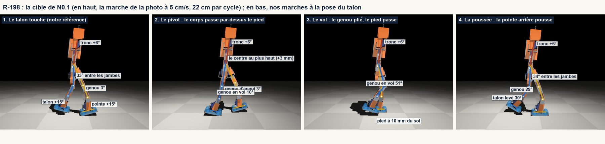

Comme les annexes à la fin d'un livre : chaque figure publiée dans les cahiers, dans l'ordre des cahiers, avec sa légende et
le lien vers le cahier qui l'explique. Les films sont dans les films et dans chaque cahier.
Les figures de la thèse
La pose visée (R-198) : le genou à 3°, 33° entre les jambes.

Les quatre moments du pas (R-198) : le talon touche, le pivot, le vol, la poussée.
Les figures des cahiers
54 figures. Tout est simulé, sauf les mesures de photos (dont seuls les squelettes sont publiés).
R-067 N0 apprend en jouant : Saison 4, simulée. À gauche : les feintes réussies montent, les chutes tombent. Au centre : le pressentiment du joueur reste sous celui du robot au hasard. À droite : en gestes enchaînés, le joueur tient bien plus longtemps.
R-068 N0 écoute la musique : Saison 5, simulée. À gauche : l'écart au vrai temps selon le tempo, avec l'oreille, sans avance, et sourd. À droite : les six styles.
R-068 N0 écoute la musique : Douze secondes de trois danses simulées. La valse tombe sur le temps ; le reggae passe entre les temps ; les tambours le perdent. Une courbe qui s'interrompt : il est tombé, puis remis debout.
R-069 N0 danse au sol : Saison 6, simulée. À gauche : l'écart au vrai temps dans les cinq conditions, et la part des temps en mesure. À droite : selon le tempo ; couché ou debout, les courbes se suivent, et seul le sourd s'en va au hasard.
R-069 N0 danse au sol : Douze secondes de la même danse. Relevé à chaque chute, il perd une seconde ; s'il continue là où il tombe (fond gris : au sol), le geste reste sur les temps ; couché dès le départ, aussi.
R-070 N3 : la tête dans l'axe, la vague des bras : Où regarde la tête de N3 pendant six secondes de marche : la tête verrouillée (rouge) balance de ±45°, la tête vive (vert) suit la route.
R-070 N3 : la tête dans l'axe, la vague des bras : Une vague : la main gauche monte, puis la main droite. À droite, les à-coups que chaque forme ajoute au léger tremblement du robot debout.
R-111 Le banc de variance : la variété des expériences : Simulé : la réussite selon la largeur de la variance à l'entraînement (3 graines par largeur ; la bande : l'intervalle à 95 %). La marche tient au nominal jusqu'à 0,25, vacille à 0,5, disparaît à 1. Tout ensemble, elle reste au plancher à toutes les largeurs.
R-111 Le banc de variance : la variété des expériences : Simulé : la variance large moins un groupe d'axes. Seul le retrait du terrain (pente, sol irrégulier, sol mou) rend la variance large apprenable : 93 % au nominal ; sans lui, la marche reste immobile.
R-124 Ce qu'on apprend de chaque exercice : Simulé : la matrice de transfert. En ligne, l'exercice sur lequel le socle d'équilibre a été appris ; en colonne, l'exercice joué ; le chiffre, la réussite sur 10 épisodes. Les exercices difficiles (avion, cercles, patineur) apprennent les faciles ; l'inverse non.
R-125 La nuit des 1000 essais : la variété des activités et la réussite sur l'inconnu : Simulé, 1000 essais : la réussite sur cinq activités jamais pratiquées selon le nombre d'activités pratiquées (le même temps pour tous ; la bande : l'intervalle à 95 %), et la réussite sur ses propres activités (pointillés).
R-125 La nuit des 1000 essais : la variété des activités et la réussite sur l'inconnu : Simulé : ce que chaque activité apporte à la réussite sur l'inconnu, en points. La balance avant (gymnastique) apprend le plus ; le coup de pied de face, l'attitude du ballet et le tir coûtent.
R-127 La semelle plus petite : plus mobile, et assez d'équilibre ? : Les cinq semelles vues de dessus, réduites autour de la cheville (le point vert) ; la croix : le centre de masse du robot. Les deux grands pieds se touchent presque au milieu.
R-127 La semelle plus petite : plus mobile, et assez d'équilibre ? : Simulé, le même cerveau : avec un pied plus petit, la marche, la vitesse, les bosses et l'équilibre sur une jambe s'effondrent.
R-127 La semelle plus petite : plus mobile, et assez d'équilibre ? : Simulé, réappris avec le même temps : l'équilibre baisse avec l'aire du pied ; réentraînée, la marche va deux fois plus vite, et d'autant plus vite que le pied est long.
R-128 Se retourner : la rotation du coup de pied, les pentagones, la vrille de Yoan : Simulé : le demi-tour sur place, quatre arabesques de suite (au départ, puis après chaque cycle). La flèche lime : la direction du torse ; la ligne blanche : celle du départ. −40°, −96°, −131°, −192°.
R-128 Se retourner : la rotation du coup de pied, les pentagones, la vrille de Yoan : Simulé : la vrille de Yoan, six vues. La tête mène, les bras s'ouvrent, la jambe libre part en position avion et le pied d'appui pivote, la tête se fixe sur la nouvelle direction, le corps se réaligne, les genoux fléchissent, un petit saut : 154° dans cet épisode.
R-129 Le T-test refait avec les acquis du matin, et le vrai T des sélections : Simulé : le vrai T, à l'échelle de N3 (les cônes A, B, C, D). Huit images de la course de 152,4 s : en avant, les virages, et le retour à reculons.
R-130 Le bassin et les genoux : bouger comme un athlète, pas sur des échasses : Simulé : la marche rapide vue de côté ; chaque point est un pied au sol, vert quand il tient, rouge quand il glisse.
R-138 Les bras pour aller plus vite : la marche rapide en ligne droite, trois vitesses : Simulé : N3 en marche rapide, 30 départs par cas ; sans les bras, il tombe le moins et va le plus loin. Les bras ne l'ont pas aidé à aller plus vite.
R-145 Le nombre de pas juste assez : où l'apprentissage cesse de payer : Simulé : la réussite (en noir) et la mesure fine (en bleu) selon le nombre de pas appris, pour quatre apprentissages de N3 ; le coude, « tenir » et « juste assez ».
R-146 Les départs du sprint : debout, à 3 appuis, à 4 appuis, sur 1,5 m : Simulé : la position de départ à 4 appuis (les deux mains au sol), résolue par la cinématique et posée 1 s : elle tient (le centre de masse glisse de 0,7 cm).
R-146 Les départs du sprint : debout, à 3 appuis, à 4 appuis, sur 1,5 m : Simulé : le départ à 3 appuis (la main droite au sol, le bras gauche en arrière).
R-148 L'athlétisme de N0 avec ses vrais moteurs (SG90) : le saut et le départ existent : Simulé : N0 et ses SG90 à 4 appuis : il tient, mais en table (les jambes tendues, le torse à l'horizontale), pas en sprinteur.
R-151 DS3240 contre MG996R : la force, la vitesse, le poids, le courant : Les servos de modélisme (fiches des vendeurs) contre ce qu'il faut à N0 pour sauter 5 cm : plus de force ne suffit pas, il manque la vitesse.
R-153 Les postures du sprint : le genou haut, le penché, l'enjambée ; la loi du penché : La loi du penché : l'angle qu'on peut tenir selon la vitesse et la force des jambes ; en rouge, les angles mesurés sur des photos de départs.
R-155 La semelle courbe (l'idée de Yoan) : le talon et la pointe arrondis : Simulé : la fente à 30° de N3 tient 2 s avec le talon et la pointe arrondis (4 cm) ; avec le pied plat et les mêmes angles, il bascule.
R-159 N0 monte un escalier : 5 marches de 3 cm : L'escalier de N0 en simulation : 5 marches de 3 cm (10 cm de giron), vues de derrière lui ; à droite, les quatre couloirs d'apprentissage (1, 2, 3 et 3 cm). Une pose, rien d'appris encore.
R-160 La cheville de botte de ski : la semelle attachée avec un angle, et la semelle a : Simulé : la vitesse suivie par chaque pied de N0 au même nombre de pas (40 millions), 30 départs ; en tirets rouges, la vitesse demandée.
R-160 La cheville de botte de ski : la semelle attachée avec un angle, et la semelle a : La semelle attachée au bloc de cheville avec un angle (0, 15 et 25°) : debout, les genoux fléchissent comme un skieur.
R-160 La cheville de botte de ski : la semelle attachée avec un angle, et la semelle a : Les quatre pieds de N0 en essai : aujourd'hui, la semelle arrondie, l'attache à 15°, les deux ensemble.
R-162 N0 avec la hanche et l'épaule en deux servos croisés (l'inverse de N3), et la no : De face : N0 aujourd'hui (13 servos) et N0.1 (17 servos) : en rouge, les servos qui plient vers l'avant ; en vert, ceux qui bougent de côté ; la semelle arrondie en bleu.
R-162 N0 avec la hanche et l'épaule en deux servos croisés (l'inverse de N3), et la no : De côté : N0.1 debout sur sa semelle arrondie attachée à 15°, les genoux fléchis de 33°.
R-167 N0.1 et les grands pas : sur le plat, sur une pente, dans l'escalier ; ce qui ch : Simulé, aux SG90 : le cycle de marche moyen de la jambe gauche à 10 cm/s, avant (noir) et après l'apprentissage des grands pas (rouge) : le genou plie pendant le vol, la cheville travaille, la hanche de côté porte le poids d'un pied sur l'autre.
R-167 N0.1 et les grands pas : sur le plat, sur une pente, dans l'escalier ; ce qui ch : Les rampes de N0.1 en simulation (3, 6, 9 et 12°) : N0.1 au pied de la rampe de 9°, et les quatre couloirs vus de haut. Une pose, rien d'appris encore.
R-171 La pointe des pieds, et la fente du sprinteur : Simulé, aux SG90 : la pointe du pied gauche au sol, tout le poids sur la jambe droite, tenue 5 s (de trois quarts et de côté).
R-172 La marche talon-pointe : le pied avant posé sur le talon, la jambe tendue ; le t : Simulé, aux SG90 : la marche talon-pointe au ralenti, de côté : le talon se pose la jambe tendue ; le pied à plat ; le poids devant, le talon arrière levé.
R-172 La marche talon-pointe : le pied avant posé sur le talon, la jambe tendue ; le t : Simulé, aux SG90 : la marche en fente talon-pointe, de côté (le 2e pas).
R-173 Des orteils pour N0.1 : une charnière passive à la racine des orteils, pour teni : Simulation : le pied de N0.1 avec des orteils, une charnière et un ressort à leur racine ; à gauche debout, à droite la pose visée sur la pointe (calculée ; il ne la tient pas).
R-176 Marcher sur une ligne, un pied devant l'autre, la pointe d'abord : Simulé, aux SG90 : marcher sur une ligne, le 2e pas : le genou haut, la pointe posée sur la ligne, le poids devant.
R-181 Imiter une marche de référence : une seule règle, « ressembler à cette marche-là : La même référence, un cycle de 10 cm en huit instants, de côté.
R-186 L'escalier par la géométrie : le geste existe-t-il sur des SG90, et une référenc : Simulé, aux SG90 : gp-esc à la fin du banc sur le vrai escalier (8 cm de giron) : à gauche le couloir de 0,5 cm (en haut), au milieu et à droite celui de 1 cm (4 marches, le bassin monté de 41 mm).
R-186 L'escalier par la géométrie : le geste existe-t-il sur des SG90, et une référenc : La même montée en sept instants (la phase de progression de 0 à 0,9) : debout, le genou levé, le pied posé sur la marche, le corps qui avance, le pied de derrière sur sa pointe, replié, puis qui vient se poser.
R-190 Marcher comme la photo, sans les bras : Au double appui, à 5 cm/s : la photo (son squelette), L14 (le tronc à -18°), photo-zero-genou (le tronc droit), la référence.
R-190 Marcher comme la photo, sans les bras : Au double appui le plus écarté, au banc à 5 cm/s : la photo (son squelette), L14 (le tronc à -18°, 20°), L15-photo (-7°, 15°), la référence (+6°, 33°).
R-190 Marcher comme la photo, sans les bras : Au double appui, de côté : la photo, dont on ne garde que le squelette mesuré (MediaPipe : le tronc à +6°, 68° entre les jambes) ; L14 au banc (le tronc à -18°, 20°) ; la référence que N0.1 va apprendre (le tronc à +6°, 33°, les bras fixes).R-191 Le balancier : le haut du corps d'avant en arrière, en fente talon-orteils : L'amplitude la plus grande selon la fréquence : toute la course jusqu'à 0,5 Hz, presque toute à 1 Hz, puis les hanches saturent (±7° à 3 Hz) ; les bras ne changent presque rien.R-194 La marche image par image : un cycle humain dessiné, à porter sur N0.1 : Les 24 positions du cycle, de la pose du talon de la jambe proche (en rouge) à la suivante.R-194 La marche image par image : un cycle humain dessiné, à porter sur N0.1 : Les 12 squelettes lus par MediaPipe dans la planche de Muybridge (les photos ne sont pas reproduites).R-198 La cible : les angles et les vitesses visés : La cible : la référence refaite au moment où le talon touche : 33° entre les jambes, le genou de devant à 3°, la pointe et le talon arrière à 15°, le tronc à 6°.R-198 La cible : les angles et les vitesses visés : Les quatre moments d'un pas de la référence refaite, avec leurs angles.